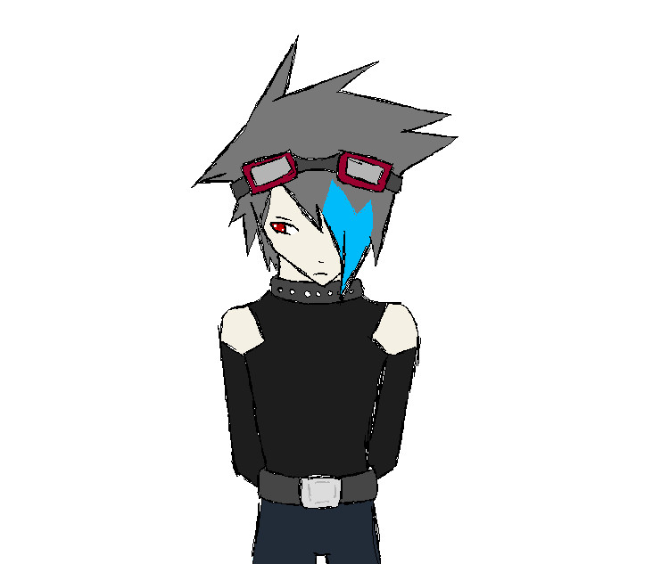
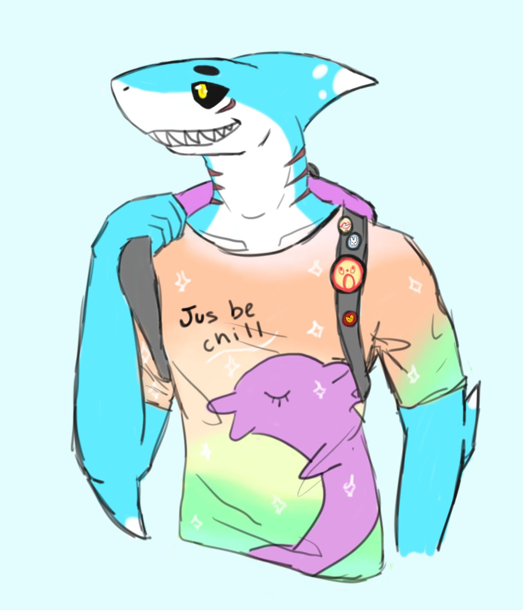

As a child I was always drawing the things around me. Animals were always the main focus of my art as a child and young teen. When I was 12 I got my first drawing tablet for digital art.
This page contains a few examples of how my art has progressed over the years. I look back at a lot of this art with a twinge of embarrassment, however it's important to me to actually look back at my old artwork and see how much I have improved over the years.

2010
2010

2011
2011

2013
2013 was a big turning point for my art. It was the year I got my first good drawing tablet, and also the year I started using art programs like Manga Studio and GIMP.
Original (2014)
Original (2015)
Mettaton (2015)
Yowamushi Pedal (2016)
Flight Rising (2017)
Between mid-2018 and the start of lockdown 2020 I didn't have a computer to draw digitally so I spent my time practicing my traditional art.

Repo! The Genetic Opera (2018)
Earthbound (2018)
The Guy Who Didn't Like Musicals (2019)
I sometimes worry that my art is growing stagnant and that I'm not going to get better, however looking back at my old works reminds me of how far I've come and how much further I can go.